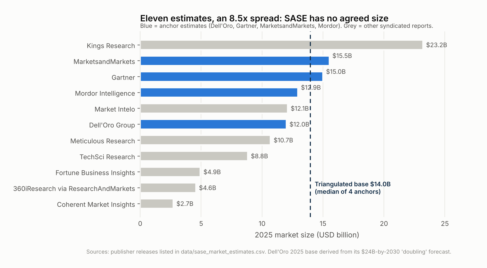
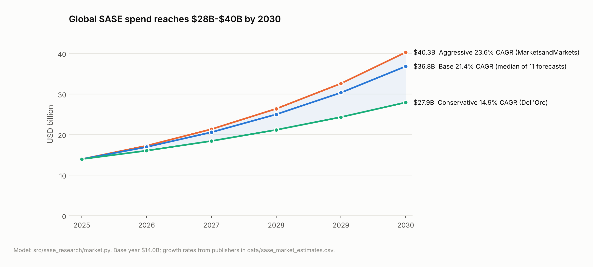
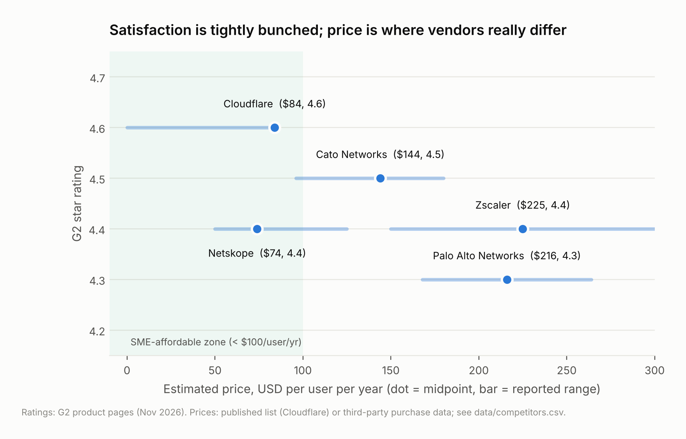
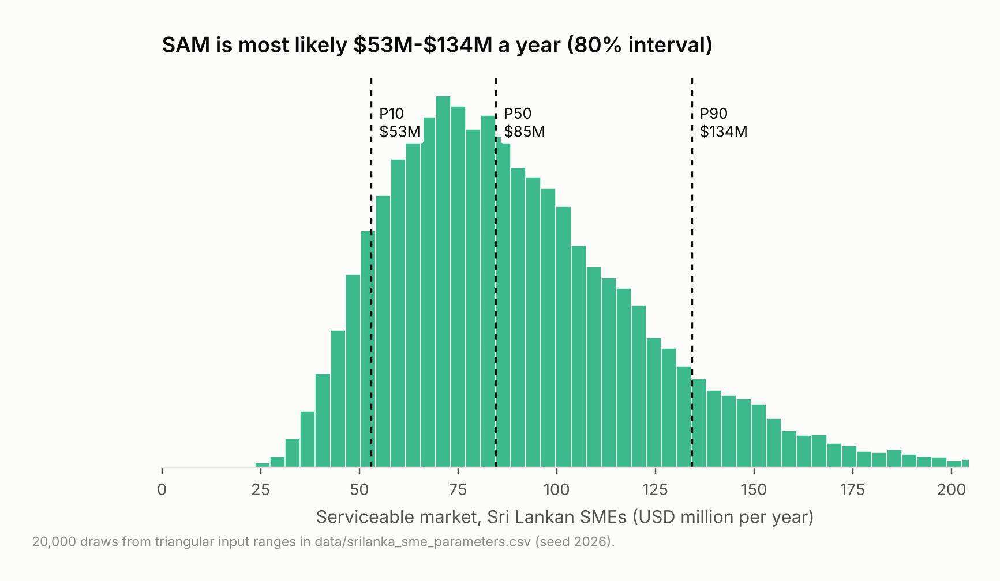

The SASE market and the Sri Lankan SME opportunity
Cloud-delivered security is replacing the office VPN and firewall. This project sizes that market from eleven published estimates, reads the market leader's annual report, tears down five competing platforms, and builds a bottom-up case for serving the buyers the leaders overlook.
Every number comes from code and CSV files in the repository, each with a link to its source.
Eleven estimates with an 8.5x spread, triangulated to $14.0B; three growth scenarios; a 20,000-draw Monte Carlo TAM / SAM / SOM.
Revenue +25.4% and a 23.2% free-cash-flow margin, but stock pay exceeds free cash flow and growth is guided to 17%.
Zscaler, Palo Alto, Netskope, Cloudflare and Cato on price, sentiment and vulnerability, plus a weighted SME-fit scorecard and SWOT.
A 16-page report with three recommendations, a 90-day plan, KPIs and risks, timed to Sri Lanka's data-protection law on 1 Jan 2027.




pip install -r requirements.txt · python -m playwright install chromium ·
PYTHONPATH=src python -m sase_research.build · pytest